Demonstrate low thrust transfer using PropagateOrbitPlugIn.
Loads the presaved file LowThrustDemo.mat. ------------------------------------------------------------------------ See also Constant, Plot2D, TimeLabl, RV2AE, PropagateOrbitPlugIn, Accel ------------------------------------------------------------------------
Contents
%------------------------------------------------------------------------------- % Copyright (c) 2000 Princeton Satellite Systems, Inc. All rights reserved. %------------------------------------------------------------------------------- dT = 3600; tEnd = 140*3600; nSim = tEnd/dT; a0 = 7000; accel = 5e-6; mu = Constant('mu earth'); t = (0:(nSim-1))*dT; a = 1./(1/sqrt(a0) - accel*t/sqrt(mu)).^2; aOP = a; xPlot = zeros(2,length(t)); xPlot(1,:) = a;
Run the orbit propagator in batch
%---------------------------------- d = load('LowThrustDemo.mat'); tag = PropagateOrbitPlugIn( 'initialize' ); PropagateOrbitPlugIn( 'set data', tag, d ); PropagateOrbitPlugIn( 'propagate', tag ); r = PropagateOrbitPlugIn( 'get r', tag ); v = PropagateOrbitPlugIn( 'get v', tag ); t = t(1:size(r,2)); xPlot = xPlot(:,1:size(r,2)); if( ~isempty(r) & ~isempty(v) ) nP = size(r,2); xPlot = xPlot(:,1:nP); xPlot(2,:) = RV2AE( r, v, mu ); [t, xLabl] = TimeLabl( t(1:nP) ); [h, hA] = Plot2D( t, xPlot, xLabl, 'a' ); legend( hA.h, 'Analytical', 'Propagator' ); end %-------------------------------------- % PSS internal file version information %--------------------------------------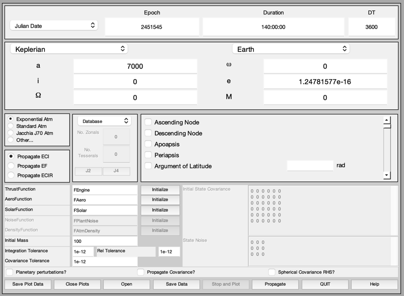 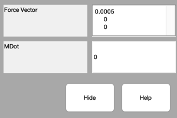 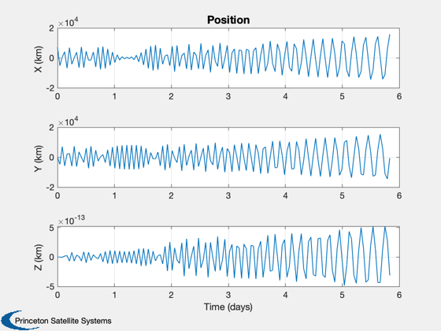 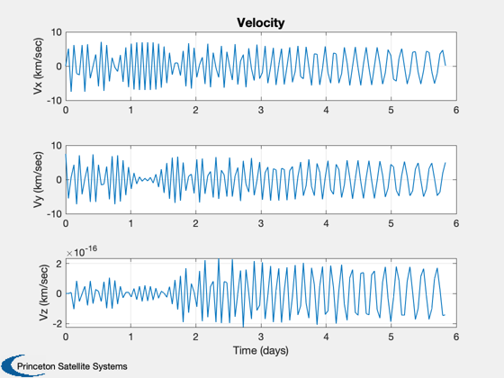 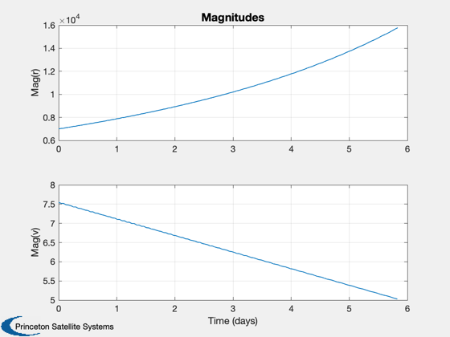
 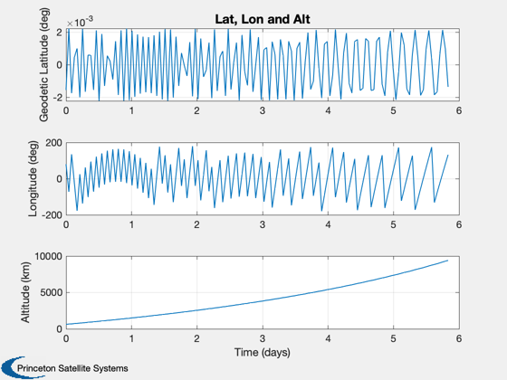 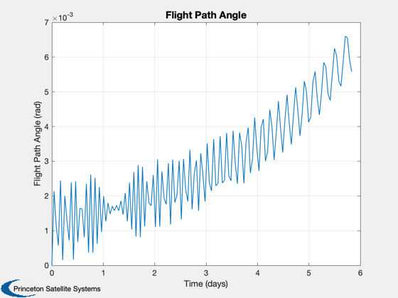 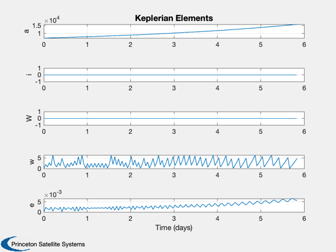 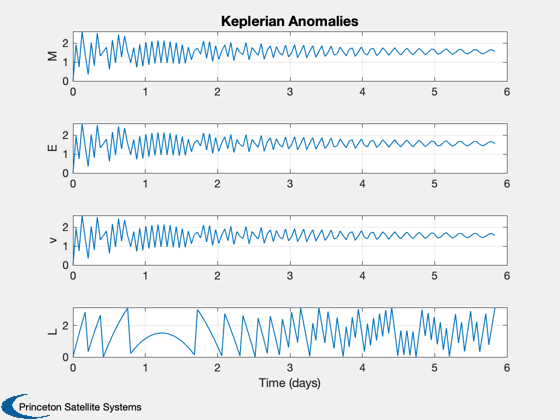 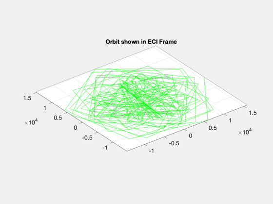 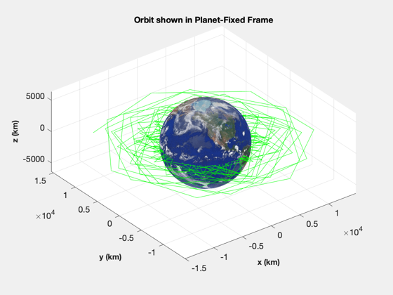 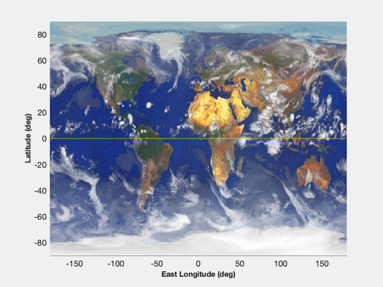 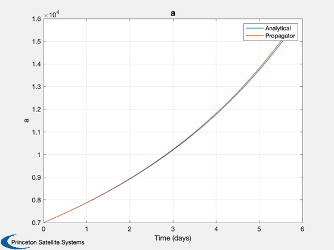
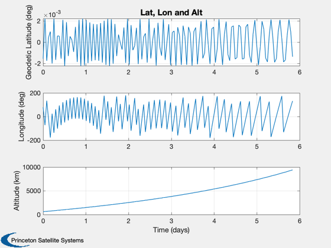 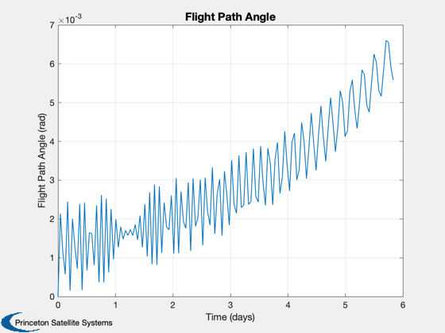 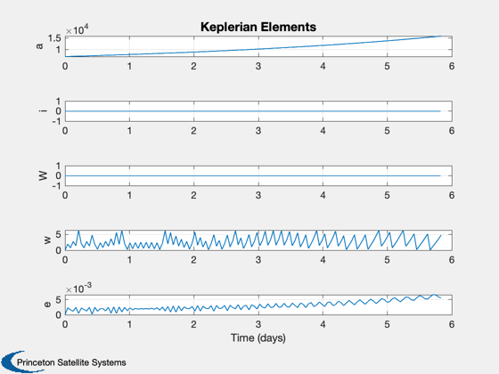 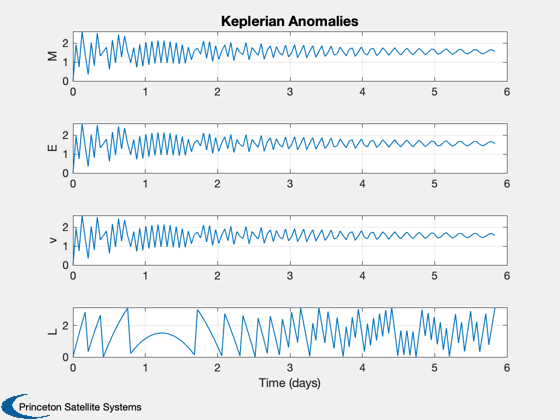 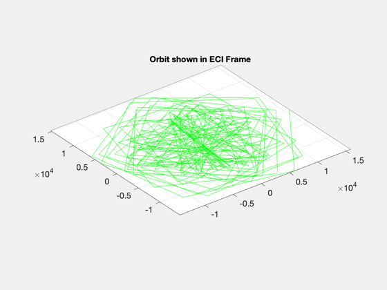 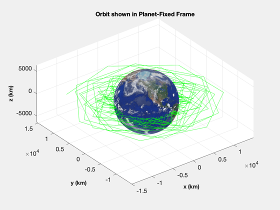 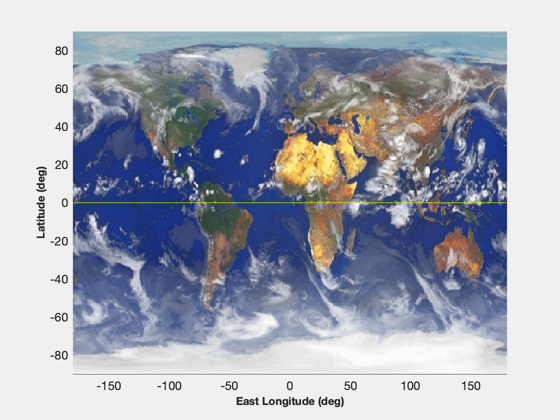 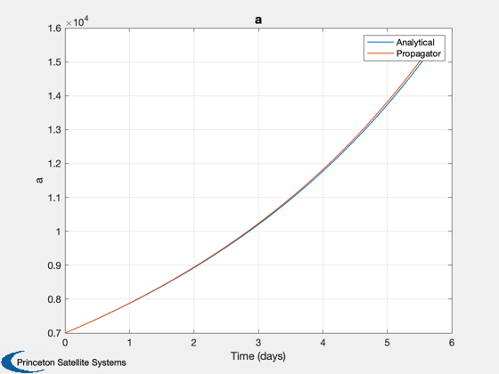